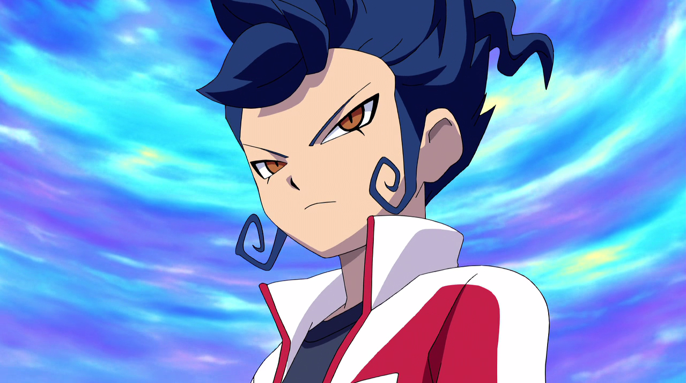
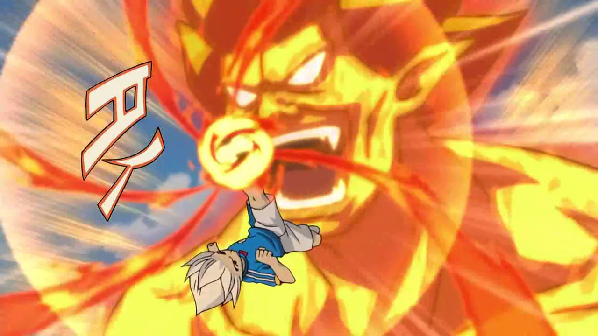
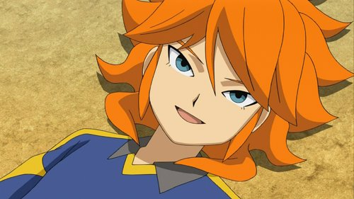

Tsurugi
Es uno de los personajes principales de Inazuma Eleven GO. Inicialmente, fue un Imperial del Sector Quinto. Era el capitán y delantero de los Caballeros Templarios. Más tarde por órdenes del Sector Quinto, fue transferido al Instituto Raimon cuya misión era destruir al equipo y evitar que ellos pudieran clasificarse al torneo Camino Imperial. Sin embargo, a partir del partido contra la Royal Academy, se revela ante esas órdenes (por influencia de su hermano Vladimir) y termina uniéndose a la revolución del fútbol iniciada por Arion Sherwind y Jean-Pierre Lapin, proclamándose como el delantero estrella del Raimon.
Volver arribaAxel
Es uno de los personajes principales de la trilogía original de Inazuma Eleven. En su juventud, fue el delantero estrella del Instituto Kirkwood, el Instituto Raimon y la selección de Inazuma Japón. En Inazuma Eleven GO, inicialmente era el Emperador del Sector Quinto durante el Camino Imperial haciéndose llamar Alex Zabel y también era el entrenador del Colegio Monte Olimpo. En la Película Crossover, juega como delantero del Inazuma Japón Legendario. Lleva el dorsal número 10 en casi todos los equipos en los que ha jugado.
Volver arribaTaiyou
Es un delantero y capitán de la Academia Universal. En Inazuma Eleven GO Chrono Stones, se une al Instituto Raimon y es uno de los elegidos para el equipo definitivo el Chrono Storm siendo el poder nº 3 de las Enseñanzas del Maestro.
Volver arriba